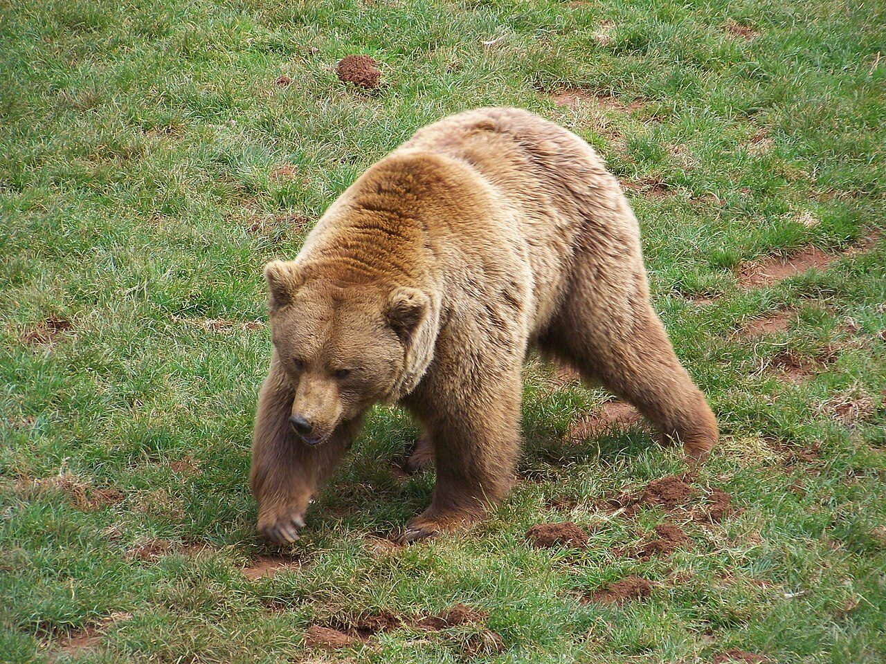
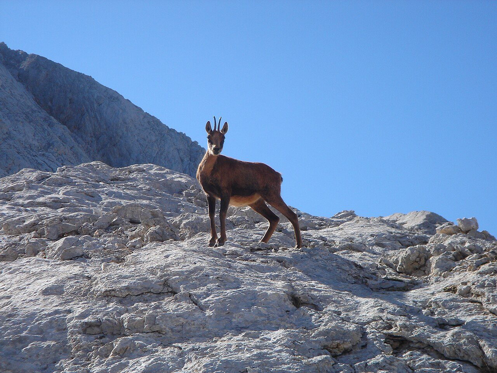
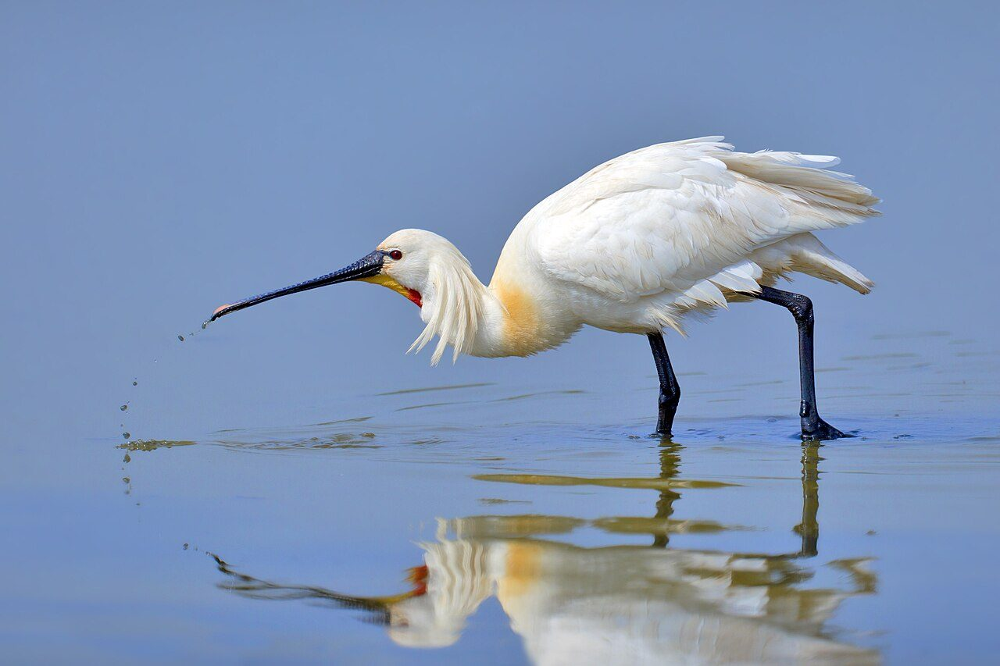

Fauna terrestre y marina
Criterios: PN 1.1, PN 5.1
🤔 Pienso5 min
Qué hago aquí: Piensa un momento y contesta con lo que ya sabes. No pasa nada si no lo sabes: es para empezar.
Haz una lista de animales salvajes que hayas visto (o de los que hayas oído hablar) en Cantabria. ¿Cuáles son de tierra y cuáles de agua?
📖 Leo y aprendo15 min
Qué hago aquí: Lee despacio, mira los dibujos y los ejemplos, y quédate con la idea clave del final.
La fauna de Cantabria es muy rica porque hay muchos ambientes distintos en poco espacio.

Foto: neusitas · CC BY-SA 2.0 · Cantabrian brown bear.jpg

Foto: No machine-readable author provided. Davidfase assumed (based on copyright claims). · CC BY-SA 2.5 · El rebeco, rey de los Picos.jpg

Foto: Andreas Trepte · CC BY-SA 2.5 · Eurasian Spoonbill.jpg
✏️ Hago25 min
Qué hago aquí: Haz las actividades en orden. Empieza siempre por las básicas.
Clasifica estos animales según su ambiente y su tipo (mamífero, ave, pez): rebeco, nutria, espátula, bocarte, urogallo, salmón, alimoche, desmán.
Explica por qué Cantabria tiene tanta variedad de fauna en tan poco espacio. Relaciónalo con lo que aprendiste del relieve y del clima.
El salmón vive en el mar y en el río. Explica su ciclo y por qué necesita los dos ambientes en buen estado.
Escribe una cadena alimentaria de un río cántabro con al menos cuatro eslabones. ¿Qué pasaría si desapareciera la nutria?
Las marismas de Santoña son una parada clave para las aves migratorias. Explica qué es la migración y por qué una marisma destruida aquí afecta a aves que viven en el norte de Europa y en África.
La caza de ballenas fue patrimonio de las villas marineras y hoy las ballenas están protegidas. ¿Cómo se puede conservar la memoria de esa tradición sin cazar? Propón dos ideas.
Elige un animal de la ficha y haz su ficha técnica: ambiente, alimentación, amenazas y un dato curioso. Indica de dónde has sacado la información.
🚀 Amplío (si quieres saber más)
Qué hago aquí: ¿Has terminado? Lee la curiosidad o elige el reto. Es voluntario.
Investiga la berrea del ciervo: cuándo y dónde se puede escuchar en Cantabria, por qué la hacen los machos y qué normas hay que respetar para observarla sin molestar. Escribe un código de buenas prácticas con cinco normas.
✅ Compruebo5 min
Qué hago aquí: Contesta sin mirar la ficha y marca cómo lo llevas.